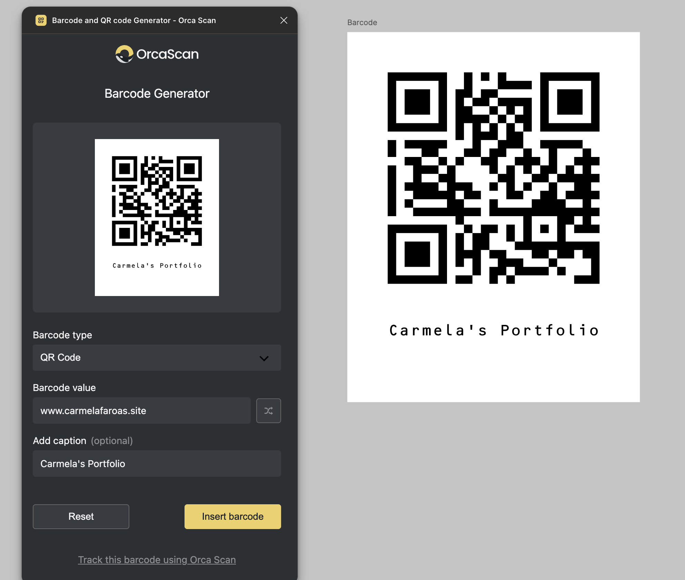
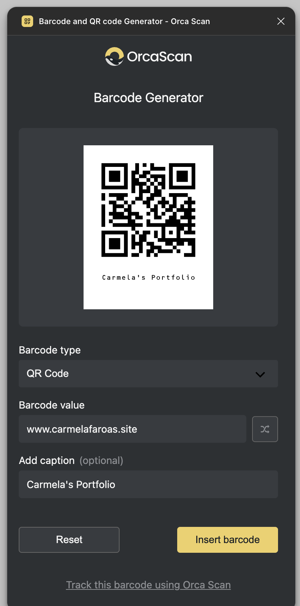
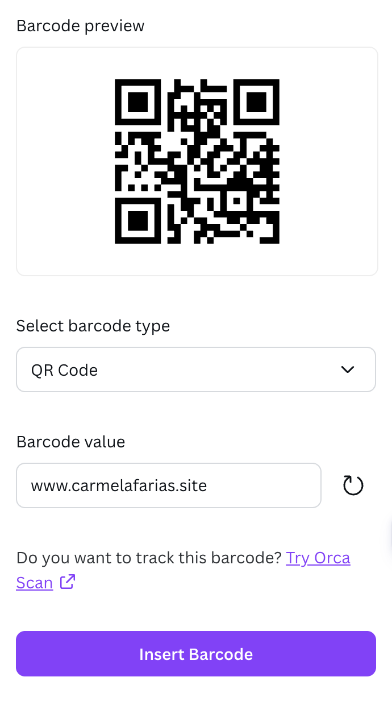
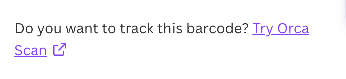

2025 · Ecosystem strategy
Putting Orca Scan where designers already work
Orca Scan's data kept leaving the product for other tools. The answer was to follow it — a marketplace of connectors and add-ons that put Orca Scan inside the places the data was already going. I proposed the two on the design side, Figma and Canva, and designed and built them both.
The opportunity
Orca Scan helps enterprise teams across manufacturing, healthcare and logistics manage barcode data at scale. Our users are operations teams, and the product was doing its job. But the data kept walking out the door — exported, pasted, re-imported somewhere else to finish the work.
Every one of those exports was a moment where Orca Scan stopped being useful and another tool took over.
So the company set a direction around it: instead of treating the exports as leakage, build for them. A marketplace of connectors and add-ons that puts Orca Scan inside the tools the data is already heading to — Slack, Figma, Canva, and an MCP server for the assistants people now work through. Each team proposed the platforms it knew.
Designers need barcodes constantly — packaging, labels, signage, events — and the workaround was to generate one somewhere else, export it, and carry it back in. The barcode plugins already on Figma were outdated, unreliable, or painful to use. Nobody had made this easy.
I'm the designer. I proposed Figma and Canva.
It answered something of mine, too. I was moving into front-end work and needed real code to learn on — code I could ship without risking the product. A plugin is its own codebase with its own release cycle. Figma became the first thing I built end to end.
What I owned
Both plugins were full product initiatives, not design handoffs:
- Competitive research across the existing plugins — 20+ analysed
- Problem definition and scope for each platform
- UX and UI — Orca Scan's own design system on Figma, Canva's component library on Canva
- Front-end implementation — vanilla JS, HTML, CSS, against each platform's SDK
- Integration with Orca Scan's barcode service — 10 symbologies, from QR and DataMatrix through to Code 128, EAN and UPC
- Testing, iteration, and both marketplace launches
Figma: the first thing I built alone
No spec, no ticket, no handoff waiting at the other end. I opened Figma and designed the panel first — what it shows, what it asks for, what happens when you press the button.
Then I made the decision that shaped everything after it: the plugin would look exactly like Orca Scan. Not Figma-native, not neutral. The same dark panel, the same yellow, the same form controls — built from the product's own components rather than redrawn to resemble them. Someone who generates a barcode here and later opens Orca Scan should recognise an interface they have already used.
That decision is also what turned the project into an education. To reuse the components
I had to understand how they are built: how a form renders, how a button renders, what
pure-select expects back, which variables the stylesheet reads. The plugin
ships its own variables.css because the product has one — a panel this small
still earns a token layer. That's the habit, not the scale.
And around all of it, the part nobody sits you down to teach: repositories, branches, what a commit is for, what a pull request is actually asking. I learned the ecosystem by having somewhere safe to be wrong — a separate codebase with its own release, where a mistake couldn't reach the product.
The panel itself stayed ruthless. Plugin panels are small, modal, and nobody has patience for complexity inside one. I cut three features from the initial scope because they added friction without adding value.
Writing the code was the smaller half. That's why it took months.

I didn't need a tutorial. I needed a codebase where being wrong couldn't reach the product.
Canva: the opposite problem
Figma reaches product designers. Canva reaches everyone else who makes things — small business owners printing their own labels, marketers, teachers, event organisers. Same underlying need, a completely different user.
And a completely different build. Canva's platform is built for this: a starter kit, an SDK in React and TypeScript, and a component library that is Canva's interface. There is nothing to design. All the work moves to one question — how should this feature behave — and from there into the API.
So the second plugin took weeks where the first had taken months. Partly because I had already cleared the path. Partly because Canva had done, for me, the half I'd had to do myself on Figma.
I had never written React. I shipped it anyway — starter kit, SDK docs, AI answering questions as they came up, two blockers taken to a colleague. Most of it I worked out alone. Canva's API is where I stopped learning how to call an API and started understanding what one is doing.
Not all of it was handed over. Canva ships apps in every language it supports, but only from a strings file you write yourself — so every label, hint and error message had to come out of the interface and be authored as content before translation could touch it.
The part I didn't expect to find interesting was watching another product think. An SDK is a set of opinions about who builds on you and how much of your interface they're allowed to touch. Canva's answers are not Orca Scan's. You don't notice your own assumptions until you spend a month inside someone else's.
Figma

Canva

What both of them do the same
They output SVG, and that was settled on day one. These codes end up on packaging, labels and signage, printed at sizes nobody can predict. A raster barcode looks right on screen and fails at the scanner. Vector is the only output that holds up where the thing actually gets used.
And the product introduces itself at the right moment. Under the value field, in both plugins, sits one line — track this barcode with Orca Scan — placed where someone has just made a code and is one thought away from wondering what happens to it next. The growth mechanism is a piece of UX, not an ad slot bolted onto the panel.

Canva turned out to be the one with the reach: past 8,000 users, against roughly 971 on Figma. The audience that designs packaging and labels every day is simply the larger one.
Results
And the second one took three weeks, against three months for the first — the cost of a platform drops once you have built on one.
The pattern held across the whole programme: meet people inside the tools they already use, solve something small for them properly, and let the product introduce itself. Slack and the MCP server went to other teams. The two on the design side were mine end to end — proposed, designed, built and shipped.
What it changed in how I work
Designing the panel was the part I already knew how to do. The two that changed me were making the product case — why this, why now, what success looks like — and then building it, which is where the design actually gets decided. Every question the code asked me was a design question I hadn't finished answering.
The distance between having the idea and having people use it every day is execution. That's what I learned to close.